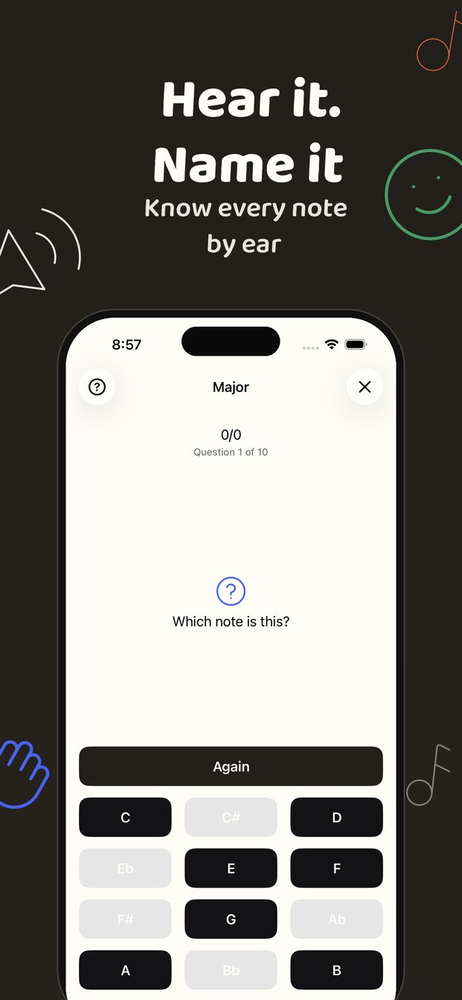
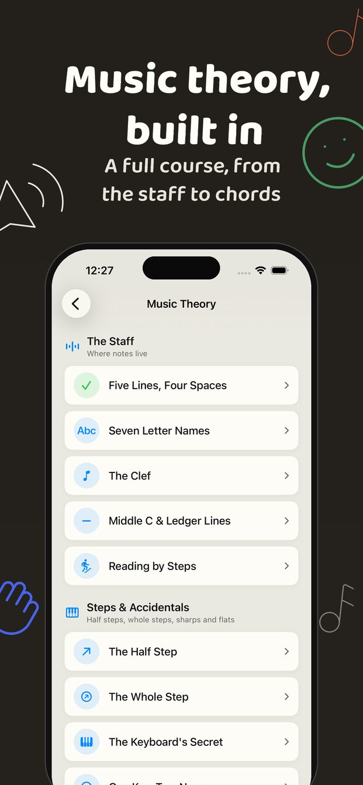
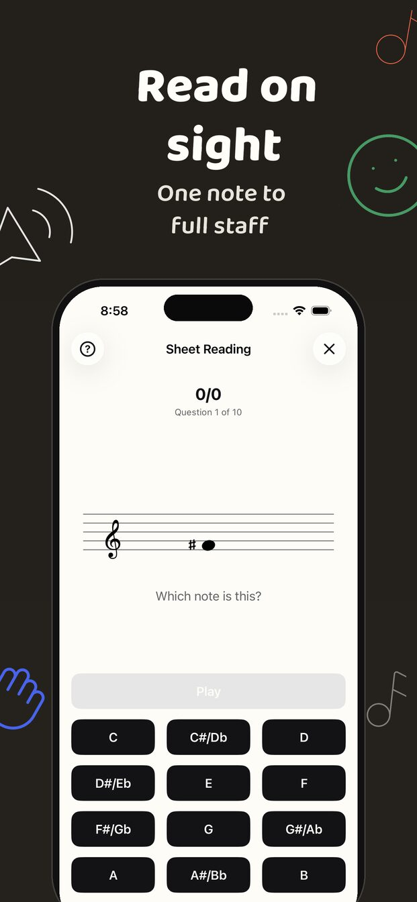
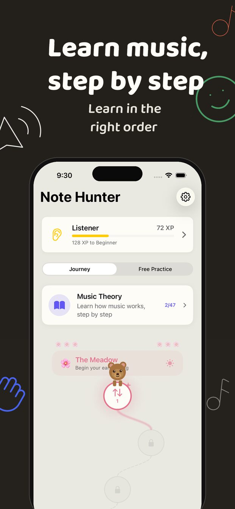

NoteHunter
Hear a note and name it. Hear an interval and know it. Read a line of music and understand why it works. NoteHunter is ear training and music theory in one app, for iPhone, iPad and Mac.




Train your ear
- Notes. A note plays, you name it. Start with two and work up to all twelve.
- Intervals. From the minor third to the octave, one at a time, in the order ears learn them.
- Rhythm. Listen to a pattern and build it back from note values.
- Sight reading. See a note on the staff and name it, from a single position up to the full range.
Understand what you hear
A music theory course in nine units: the staff and clefs, steps and accidentals, scales, key signatures, intervals, rhythm and meter, chords and cadences. Each lesson is a few short cards and then a drill, so you use an idea straight after you read about it. Lessons you've passed come back in a daily review, so they don't fade.
Know where to start
New to music? The Journey takes you through the skills in the order music teachers use: sound before symbol, a few notes before many, easy intervals before hard ones. Already play? Free Practice opens every mode and setting, and statistics show which notes and intervals you have solid and which still slip.
NoteHunter is in English, German, Spanish, French, Hungarian, Japanese, Korean and Chinese.
NoteHunter is made by tallpoppy, an independent software studio. · Support · Privacy · Beta